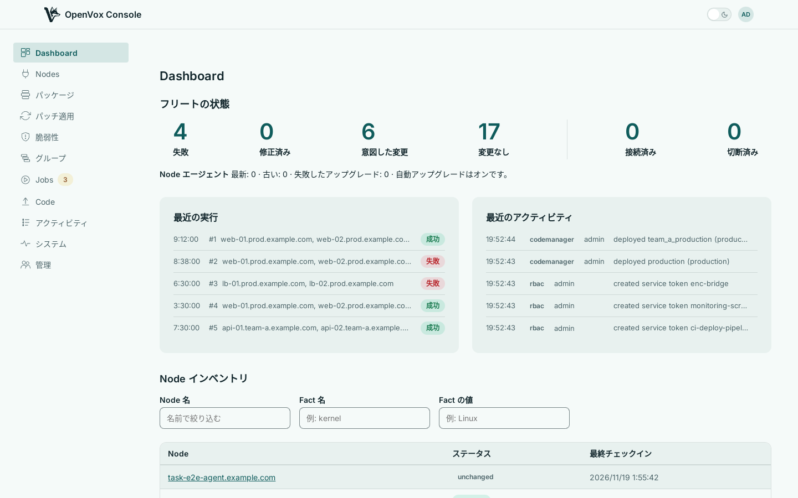

すべての Node を見て、どこで何を動かすかを決め、コードを deploy し、パッチを適用して Tasks と Plans を実行し、返ってきたものに対処する。OpenVox 向けの Puppet Enterprise コンソール — すでに運用している openvox-server と openvoxdb の上で動く、1 つの Go バイナリです。

選ばれる理由
以下の画像はすべて、稼働中のインスタンスから撮影したコンソール自身の画面です。
各 Node が報告するすべてのパッケージを、OSV (外部に出られない環境向けには独自のミラー) と Tenable の既知の脆弱性と照合し、1 つの一覧にまとめます。パッチ適用で何が直るかをまず確認できます。誰も評価できなかった Node はそのとおりに表示され、問題なしとして扱われることはありません。
OpenID Connect によるシングルサインオンで、サインインのたびにプロバイダーのグループがコンソールのロールにマッピングされます。ロールは単純な権限の集合なので、利用者には職務に必要なものだけが見えます。自動化には専用のサービストークンが与えられ、すべての変更が記録に残ります。
最初は 1 つのインスタンスで。フリートが大きくなったら、同じイメージを web、worker、orchestrator の個別インスタンスとして動かし、相互 TLS でクラスター化し、分類をコンパイラーのすぐ隣に置きます。永続的なものはすべて Postgres にあるため、インスタンスはロードバランサーの背後で自由に増減でき、そのフリート全体を 1 つのページで確認できます。


1 台の Node、選択した Node、またはグループが一致するすべての Node で、次の定期実行を待たずに Puppet を実行できます。各 Node の結果は個別に返ります — ステータス、出力、生成された Report へのリンク — そしてオフラインだった Node はすぐにそのことを伝えます。

control リポジトリを 1 つ、またはチームごとに 1 つ用意し、任意のタイミングでも push のたびにでも deploy できます。そしてリポジトリごとに、その Environments に割り当てられた Node の数と、実際にそこから実行している Node の数を比較できます — その差が、deploy が届いていないこと、あるいはどこからも送られていないコードを Node が実行していることを教えてくれます。
そして、コンソールに求められるその他の機能
すでに運用しているスタックの上に構築
openvox-server は引き続きカタログをコンパイルし CA を運用します。openvoxdb は引き続き Facts と Reports を保持します。エージェントは今と同じ相手と通信し続けます — コンソールは標準の ENC 契約を提供するため、Node 側で変更するものはありません。
docker compose up で openvoxserver、openvoxdb、Postgres、コンソールがまとめて起動します。テスト用エージェントを向けるだけで、本格導入を決める前に自分の Nodes が現れるのを確認できます。
OpenVox Console は、push のたびに amd64 と arm64 向けにビルドされるコンテナイメージと、単一のバイナリとして提供されます。インストールガイドでは、コンテナまたはパッケージを使って、空のホストから openvoxserver、openvoxdb、Postgres、コンソールからなる稼働するデプロイまでを案内します。